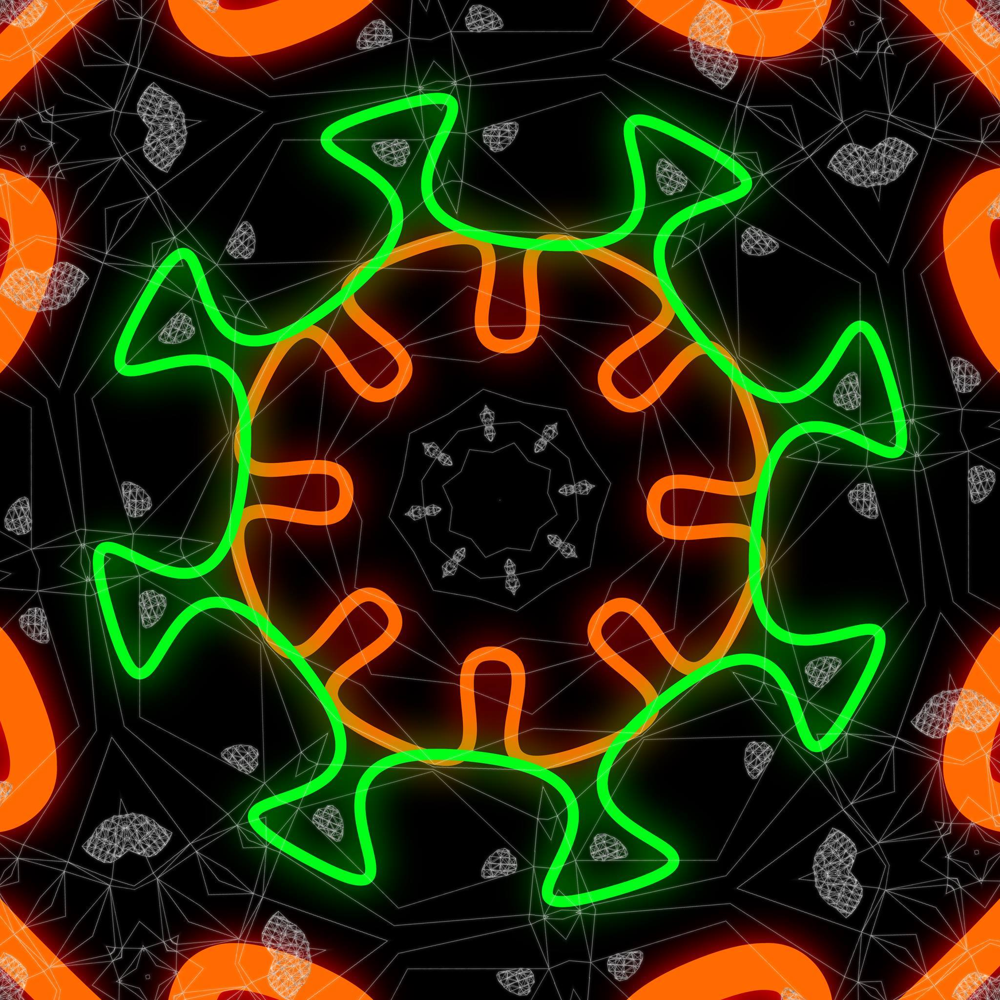

Cosmografías
Taller Fulldome
Exploración inmersiva de cartografías celestes y visualización del cosmos a través de estructuras audiovisuales en entorno fulldome.
Datos técnicos
- Año: 2016
- Duración: 4:00
- Formato: fulldome
- Tipo: obra colectiva
- País: Brasil
- Contexto: Taller Fulldome
Descripción
Cosmografías propone una exploración audiovisual del cosmos a partir de la construcción de cartografías visuales en entorno fulldome. La obra se centra en la representación de estructuras celestes, datos astronómicos y configuraciones espaciales que expanden la percepción del espectador.
A través de dinámicas visuales y composiciones abstractas, el proyecto investiga modos de traducir fenómenos científicos en experiencias sensibles, articulando visualización, inmersión y espacialidad en un entorno envolvente.
Dimensión pedagógica
La obra permite trabajar la visualización de datos y fenómenos astronómicos desde una perspectiva artística, facilitando el cruce entre representación científica y experiencia perceptiva.
Asimismo, introduce el fulldome como herramienta para la mediación del conocimiento, donde la visualización se convierte en una forma de exploración y construcción de sentido.
Contexto de producción
Cosmografías se desarrolla en el marco del Taller Fulldome como una experiencia colectiva de investigación y producción, donde múltiples autores articulan prácticas de visualización, experimentación audiovisual y trabajo colaborativo.
En este sentido, la obra se posiciona como un ejercicio de construcción conjunta de conocimiento, donde el domo funciona como laboratorio de exploración estética y científica.
Registro audiovisual
 ▶
▶